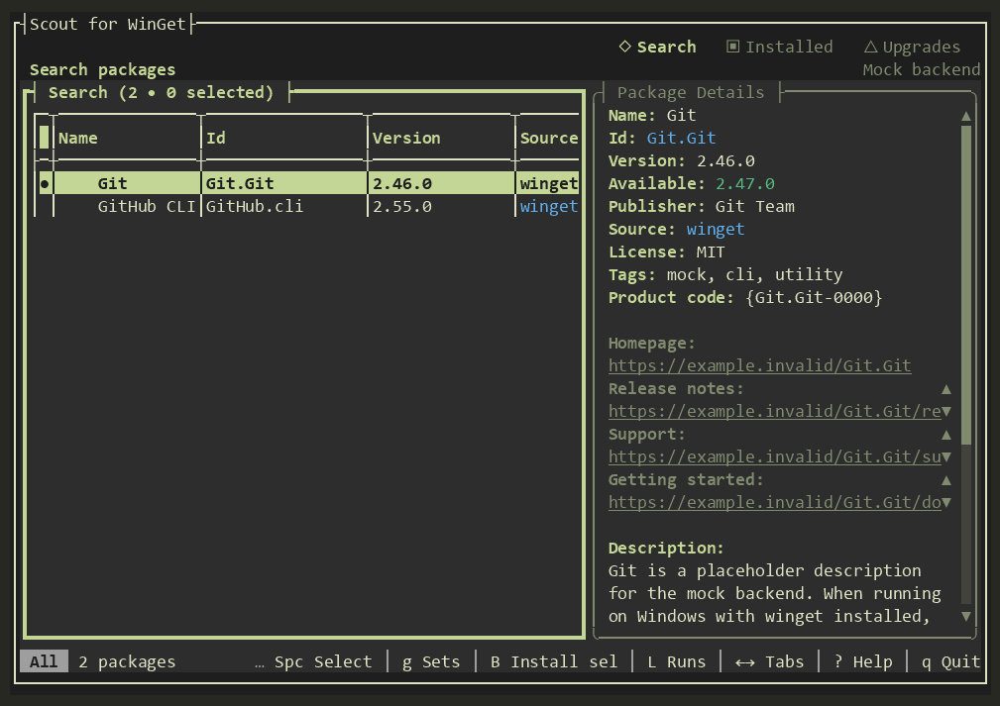

Search and inspect together
Browse results while the selected package's publisher, source, versions, links, and description appear alongside them. No separate lookup to see what you found.
WINGET SCOUT · WINDOWS 10 & 11
Scout for WinGet puts search results, package details, installed apps, and available upgrades in one terminal workspace. Fewer commands to remember. More room to decide what happens next.
Free and open source · Portable ZIP · x64 and arm64

YOUR PACKAGE WORKSPACE
Scout keeps the useful context in view while you move from finding a package to taking action.
Browse results while the selected package's publisher, source, versions, links, and description appear alongside them. No separate lookup to see what you found.
Mark several packages, then check a source-aware install or upgrade plan. Scout flags entries it cannot resolve or install before the batch runs.
Switch between Installed and Upgrades, filter the list, manage pins, and choose exactly which available updates to apply.
Save package sets, inspect recent runs, export lists, and opt into daily checks that can notify you when unpinned upgrades change.
WHY SCOUT
The WinGet CLI is powerful for commands and scripts. Scout makes the interactive work easier to follow: browse, compare, select, and act without losing your place.
See the daily workflowwinget search <name>winget show --id <package>winget install --id <package>Each command works; moving between results and details means keeping the package ID in hand.
Stay in one workspace, use the keyboard or mouse, and let the status bar show the actions available now.
MAKE IT YOURS
Switch palettes in the app with t. These are real captures from Scout v0.2.0 with sample packages; the gallery changes both palette and task.
Search results and package details, side by side.
Screenshots were captured from the real app with tuirec in --mock mode. Package names and links in the captures are sample data.
READY WHEN YOU ARE
Download the portable ZIP for your PC, extract the complete folder, and run wingetscout.exe. No .NET runtime or installer is required.
The WinGet community package is being prepared. Its winget install command will be available after that submission is accepted.